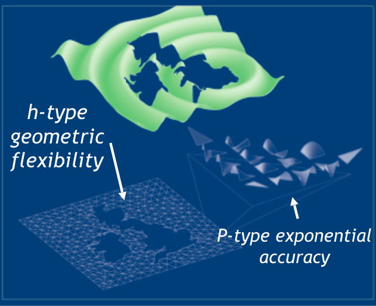
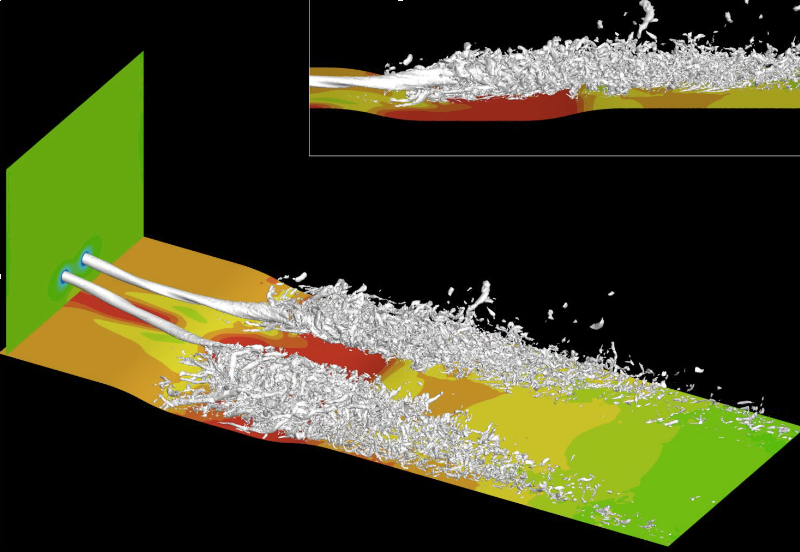
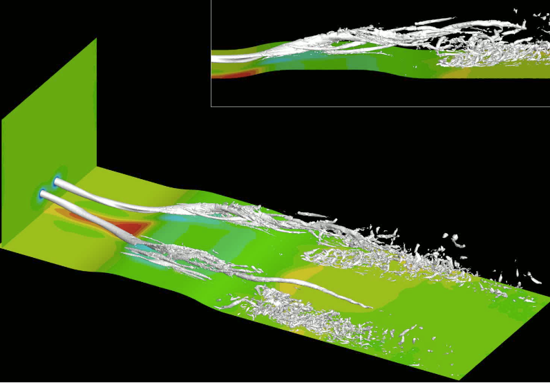

High order offers more resolution
In the image above we capture a snapshot of the vortex roll-up on a NACA0012 wing tip section. Because of the high resolution we can see in the detail of the boundary layer flow over the 2d section the small scale structures reflected in this plot of helicity. Detail like this is atypical in CFD, as most CFD is undertaken at second order and deploys a single or two equation turbulence closure model. In this simulation we used a 6th order simulation without any turbulence modelling apart from a sub grid scale viscosity model. While for many industrial applications the lower order methods meet engineering requirements, there is an increasing demand from industry for higher fidelity simulations to provide more insight and understanding of their flow regimes. In the image above, we see a small counter-rotating structure (shown in yellow) wrapped around the main vortex downstream of the trailing edge of the aerofoil which is not seen in the second order simulations.
The numerical approach
Our director Spencer Sherwin is a world expert in spectral/hp methods illustrated in the picture above where in the triangular map we can see linear finite elements resolving the geometry (the geography of the Britain and Ireland) but by applying high order polynomial bases on each element we can resolve complex features. Spencer has been developing this technology for the last 20 years and deployed it successfully on complex industrial geometries including jet enginer components and Formula 1 racing cars, which has included solving the challenge of creating high order meshes.
Application to vortices
Here we see two counter rotating vortices approaching a depression (which causes a pressure rise) leading to a breakdown in both structures. Many aerodynamic applications, such a motor racing aerodynamics, involve the manipulation of vortices in the vicinity of geometry to manage other flow structures and exploit the low pressure in the core of a vortex to generate suction on a surface.
The same pair of counter rotating vortices are shown here approaching a bump, opposite in shape to the depression we looked at above, and we can see that the reduction in pressure ensures both vortices successfully negotiate the obstacle. Performing simulations at this high a resolution affords us the opportunity to study the modes in the vortex and to analyse the stability of the structures proving insight to the aerodynamicist seeking to optimise the geometry.

Application to boundary layers
This study involved the application of these spectral/hp techniques to the study of stalling wings. The method is being used to explore the application of wavy leading edges to improve the behaviour of the wing at very high incidences. If you are interested to know more or have an application that would benefit from this technology email us at info@lcs-fast.com.